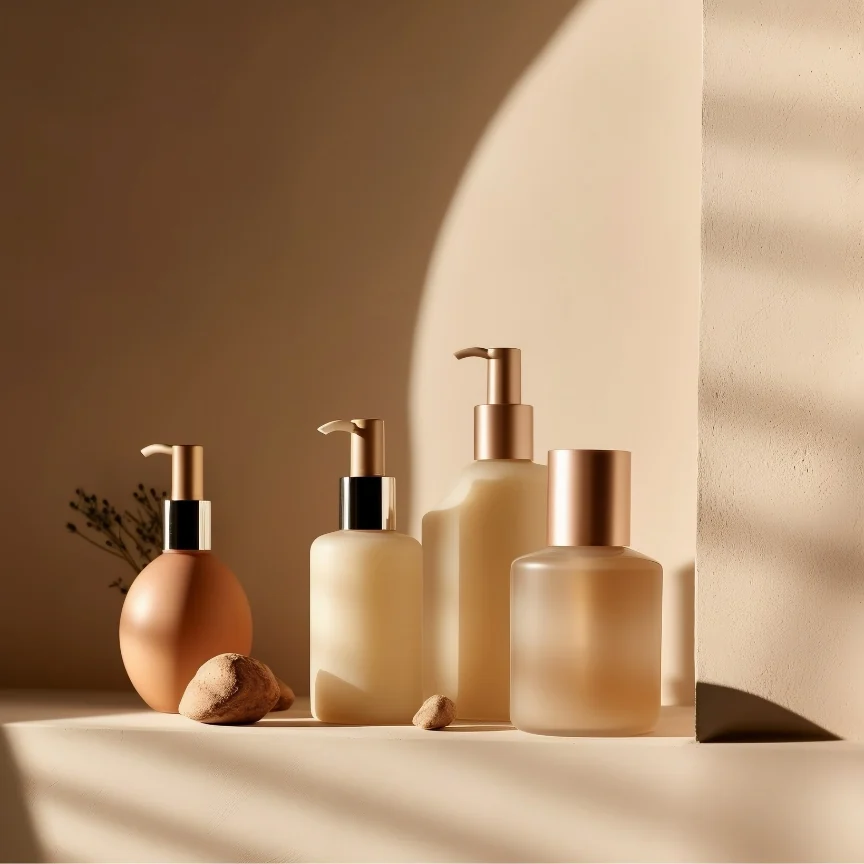
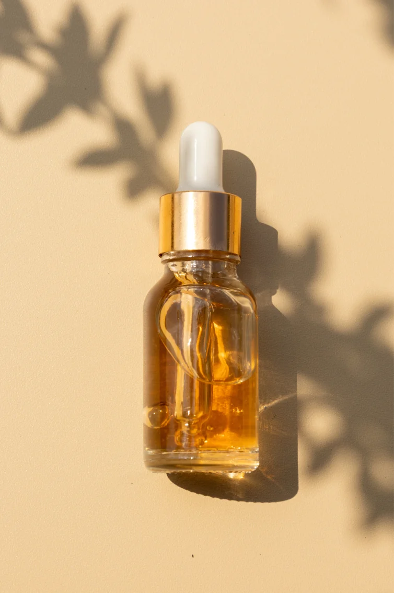

Megnyílt a saját szalonom
Elindult az Eliza Beauty Salon, a személyre szabott törődés helye.
Hiszek a gondoskodás erejében és abban, hogy minden bőr megérdemli a személyes figyelmet. Ismerd meg a szemléletemet és az Eliza Beauty Salon történetét.

A kozmetika számomra önbizalomról, jó közérzetről és énidőről is szól.
Szia, Eliza vagyok, a leendő kozmetikusod! A szépség mindig is az életem része volt, így nem volt kérdés, hogy a kozmetika lesz a hivatásom.
14 éve segítek vendégeimnek abban, hogy bőrük egészségesebb, fiatalosabb és ragyogóbb legyen. Folyamatosan fejlesztem tudásomat, hogy korszerű technológiákkal és gondosan kiválasztott hatóanyagokkal dolgozhassak.
Nálam nincs sablonkezelés. Megismerem az igényeidet, és az otthoni rutinod kialakításában is segítek.
Szeretettel várlak, Eliza
Elindult az Eliza Beauty Salon, a személyre szabott törődés helye.
A Beauty Academy szakmai trénereként és oktatójaként más kozmetikusokat is segítettem.
A mesterképzés elvégzésével tovább mélyítettem szakmai tudásomat.
Gondosan választom meg a kezeléshez használt hatóanyagokat és eljárásokat.
Őszintén beszélünk a bőröd igényeiről és a kezelési lehetőségekről.
A természetes szépséged kiemelése és a bőröd ápolása a célom.
A folyamatos tanulás segít, hogy naprakész tudással dolgozzak.
Minden kezelés egyben lehetőség a pihenésre és feltöltődésre.
Időt szánok a kérdéseidre, meghallgatlak, és a bőröd igényeihez igazítom a kezelési tervet.

A kezelések alatt privát, nyugodt környezetben kapcsolódhatsz ki. Itt van idő a kérdéseidre, a bőröd megismerésére és az otthoni ápolás megbeszélésére.
A szakértelem, a gondosan kiválasztott hatóanyagok és a személyes törődés együtt teszi teljessé az élményt.
Kérdésed van a kezelésekről, vagy időpontot szeretnél egyeztetni? Keress bizalommal, és segítek megtalálni a számodra legjobb megoldást!
Kizárólag előre egyeztetett időpontra.